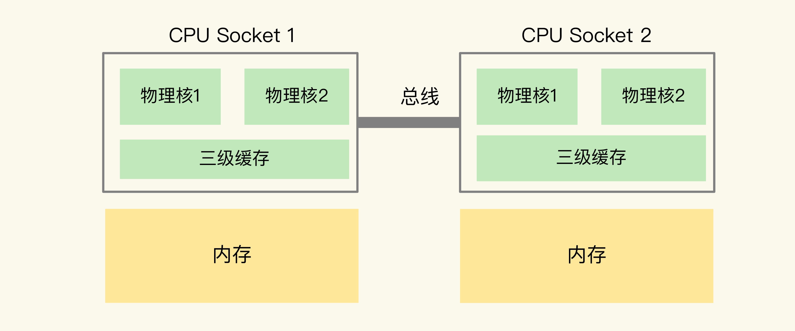

- 获取 Redis 实例在当前环境下的基线性能。
- 是否用了慢查询命令？
- 如果是的话，就使用其他命令替代慢查询命令，或者把聚合计算命令放在客户端做。
- 是否对过期 key 设置了相同的过期时间？
- 对于批量删除的 key，可以在每个 key 的过期时间上加一个随机数，避免同时删除。
- 是否存在 bigkey？
- 对于 bigkey 的删除操作，如果你的 Redis 是 4.0 及以上的版本，可以直接利用异步线程机制减少主线程阻塞；如果是 Redis 4.0 以前的版本，可以使用 SCAN 命令迭代删除；
- 对于 bigkey 的集合查询和聚合操作，可以使用 SCAN 命令在客户端完成。
- Redis AOF 配置级别是什么？业务层面是否的确需要这一可靠性级别？
- 如果我们需要高性能，同时也允许数据丢失，可以将配置项 no-appendfsync-on-rewrite 设置为 yes，避免 AOF 重写和 fsync 竞争磁盘 IO 资源，导致 Redis 延迟增加。
- 如果既需要高性能又需要高可靠性，最好使用高速固态盘作为 AOF 日志的写入盘。
- Redis 实例的内存使用是否过大？发生 swap 了吗？
- 如果是的话，就增加机器内存，或者是使用 Redis 集群，分摊单机 Redis 的键值对数量和内存压力。
- 同时，要避免出现 Redis 和其他内存需求大的应用共享机器的情况。
- 在 Redis 实例的运行环境中，是否启用了透明大页机制？
- 如果是的话，直接关闭内存大页机制就行了。
- 是否运行了 Redis 主从集群？
- 如果是的话，把主库实例的数据量大小控制在 2~4GB，以免主从复制时，从库因加载大的 RDB 文件而阻塞。
- 是否使用了多核 CPU 或 NUMA 架构的机器运行 Redis 实例？
- 使用多核 CPU 时，可以给 Redis 实例绑定物理核；
- 使用 NUMA 架构时，注意把 Redis 实例和网络中断处理程序运行在同一个 CPU Socket 上。
备注：
内存大页机制：Linux 内核从 2.6.38 开始支持内存大页机制，该机制支持 2MB 大小的内存页分配，而常规的内存页分配是按 4KB 的粒度来执行的。
NUMA 架构：在主流的服务器上，一个 CPU 处理器会有 10 到 20 多个物理核。同时，为了提升服务器的处理能力，服务器上通常还会有多个 CPU 处理器（也称为多 CPU Socket），每个处理器有自己的物理核（包括 L1、L2 缓存），L3 缓存，以及连接的内存，同时，不同处理器间通过总线连接。
